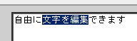

文字の自由編集ページ
＜使い方＞
１．文字を装飾したい部分をマウスやキーボードで選びます
(例)…文字を範囲指定します
２．"太字"や"斜体"、文字色などのボタンを押して下さい
３．編集が終わったら、"文字編集完了！"ボタンを押して下さい
※この作業ではホームページが壊れることがないので
気楽に文字編集をお楽しみ下さい！
改行はSHIFT＋ENTERで行って下さい
段落を変える場合はENTERのみ入力して下さい
文字装飾：
太字
斜体
下線
文字位置：
左揃え
中央揃え
右揃え
文字色：
■
■
■
■
■
■
■
■
■
■
■
■
■
■
■
■
■
■
■
■
文字サイズ：
１
[２]
３
４
５
６
７
その他：
ライン（線分）
リンク
※ 文字自由編集の注意
各編集ボタンの上でマウスカーソルを静止させると簡単な説明が表示されます。
この編集画面は
Windows版 InternetExplorer 5.5以上
でなければ正常に動作しません。